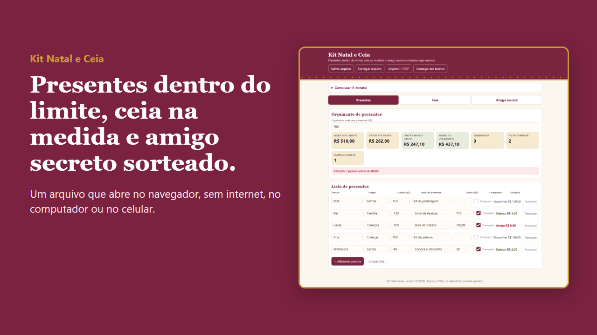
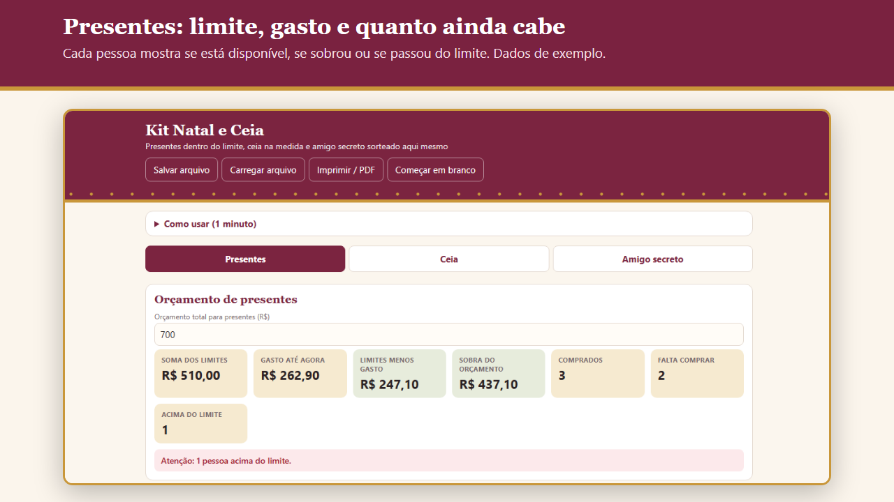
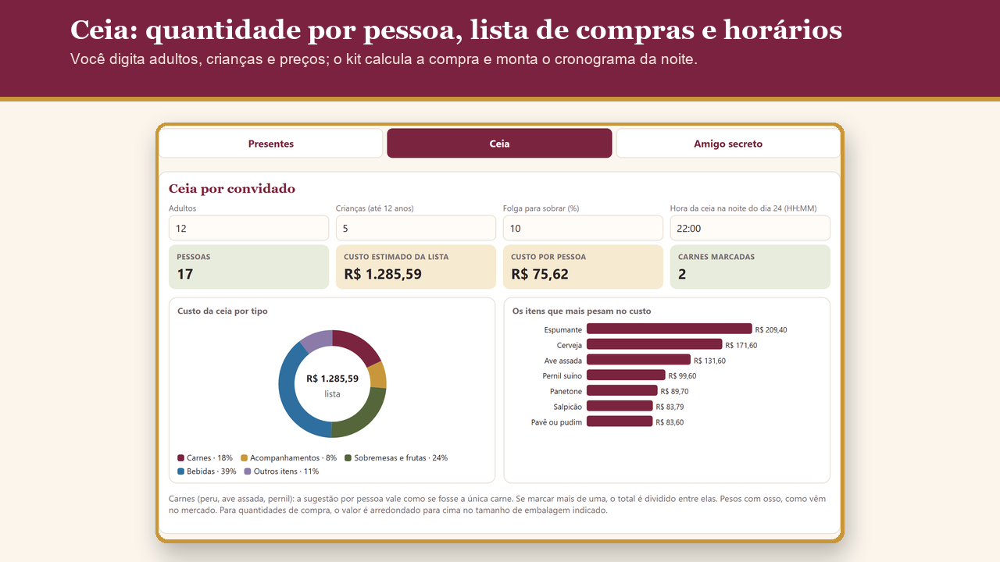
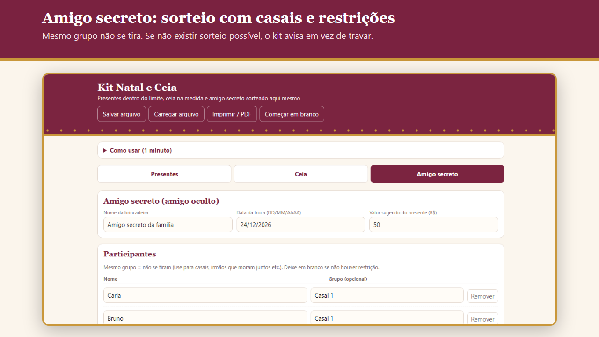
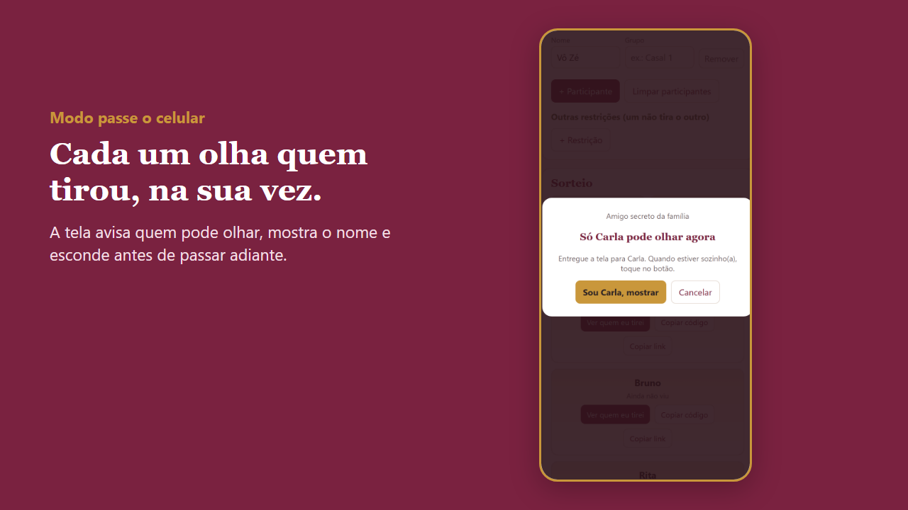

Planeja Home
Chegue ao dia 24 sabendo quanto gastou nos presentes, o que comprar para a ceia e quem tirou quem.
O Kit Natal e Ceia reúne presentes, ceia e amigo secreto em um app de arquivo único, que abre no navegador do computador e do celular, sem internet e sem login.
Quero o Kit por R$ 17,00
Preço de lançamento até 30/11/2026. Pagamento único. Pix ou cartão. Garantia de 7 dias.

A dor
Presente comprado sem limite estoura o orçamento, a ceia sobra ou falta comida, e o amigo secreto vira papelzinho e sorteio repetido. Tudo em listas soltas, na véspera.
O que é
Um app com três abas. Você recebe o app em branco, um app de exemplo já preenchido (valores fictícios) e um guia em PDF ilustrado, passo a passo.

O que vem
- App em branco, pronto para os seus dados
- App de exemplo preenchido (valores fictícios)
- Guia em PDF ilustrado, passo a passo
- Presentes: limite, ideia e gasto por pessoa, com o painel do que falta comprar e quanto sobra do orçamento
- Ceia: adultos, crianças e folga; 15 itens sugeridos com quantidade, embalagem de compra e custo pelos preços que você digitar
- Cronograma de 12 tarefas contado para trás a partir da hora da ceia, com aviso quando duas coisas disputam o forno
- Amigo secreto: participantes, grupos (casal não se tira) e restrições extras; se não houver sorteio possível, o app avisa
- Revelação pelo modo passe o celular, ou por código por pessoa
- Salvar e carregar backup; impressão em A4 ou PDF



Para quem é
Quem compra os presentes da família, quem faz a ceia da noite do dia 24 e quem organiza o amigo secreto da família, do trabalho ou dos amigos.
Quem quer um site com login para os participantes sortearem sozinhos online, ou receitas e cardápio pronto: o app calcula quantidades e horários, não ensina a cozinhar. Sobre a revelação à distância: o código só disfarça o nome para ninguém ler por acidente, e quem recebe precisa receber também o arquivo do app. Não é proteção contra quem quiser descobrir. Se o sigilo é essencial, use o modo passe o celular.
Como acessar
Pague por Pix ou cartão na Kiwify. Os arquivos (um .zip com o app em branco e o exemplo, mais o guia em PDF) ficam na área do comprador e chegam no seu e-mail. Extraia o .zip e dê dois cliques no app: ele abre no Chrome, Edge, Safari ou Firefox, no computador, tablet ou celular, sem internet e sem instalar nada. Os dados ficam no navegador do aparelho; use "Salvar arquivo" para ter uma cópia.
Preço de lançamento válido até 30/11/2026. Pagamento único. Pix ou cartão. Garantia de 7 dias.
Garantia de 7 dias
Se não for o que você esperava, peça o reembolso em até 7 dias da compra, pela Kiwify ou pelo e-mail contatoplanejahome@gmail.com.
Perguntas frequentes
Preciso de internet ou de conta?
Não. O app abre no navegador, offline, sem login e sem instalar nada.
O que vem na compra?
O app em branco, o app de exemplo preenchido e um guia em PDF ilustrado.
O sorteio é sigiloso?
No modo passe o celular, a tela mostra o nome só para quem vai olhar e o esconde antes de passar adiante. Na revelação à distância, quem recebe precisa receber o arquivo do app e o código; o código apenas evita leitura por acidente e não protege contra quem quiser descobrir.
Dá para evitar que casais se tirem?
Sim. Você cria grupos e define restrições extras; se não existir sorteio possível, o app avisa.
As quantidades da ceia são exatas?
São referências de uso doméstico que você edita. Confira a embalagem na hora de comprar.
Meus dados ficam salvos?
Ficam no navegador do aparelho. Use "Salvar arquivo" para guardar uma cópia e carregá-la quando precisar.
Posso revender o arquivo?
Não. O uso é pessoal.
Como peço reembolso?
Em até 7 dias da compra, pela Kiwify ou pelo e-mail contatoplanejahome@gmail.com.
Não consegui abrir. E agora?
Extraia o .zip e abra o arquivo .html pelo navegador, não por um editor de texto. Se persistir, escreva para contatoplanejahome@gmail.com.